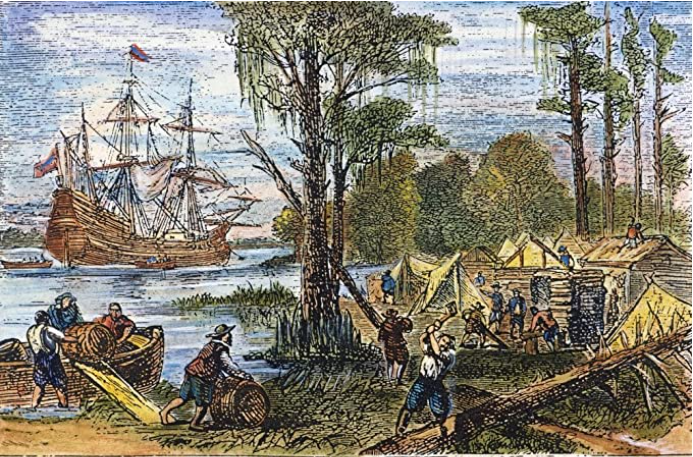
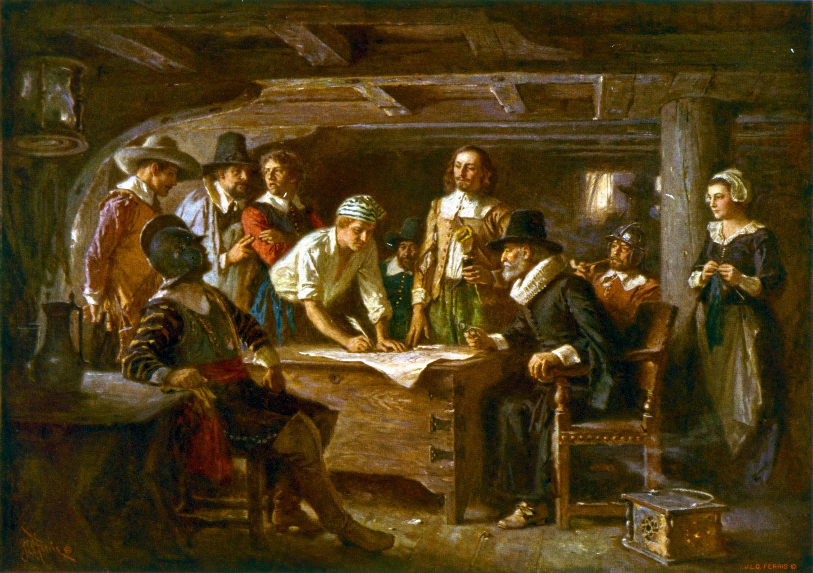
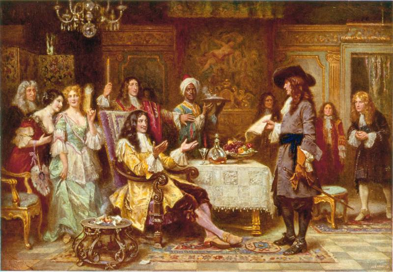
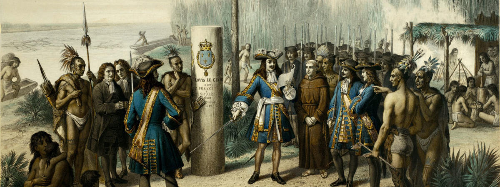

The massacre of the French at Fort Caroline on the St. Johns River, Florida by Spanish admiral Pedro Menéndez de Avilés in September 1565
The oldest permanent European settlement, older than even Jamestown or Plymouth, was founded on September of 1565 by a Spanish soldier named Pedro Menéndez de Avilés in St. Augustine, Florida. Tasked with the mission of remove French Huguenot colonists, Menéndez was ready to go to battle. Spain's King Philip II wanted the French elminated for multiple reasons. As a catholic, he couldnt stand how they were Protestants. The french had also previously established an outpost. This base posed threat to Spanish territorial claims and the Spanish treasure fleet. Menéndez's mission didnt come without trouble. Hoping to arrive before the French could recieve reinforcements, they tried to hastily make their way to the fort. But it was too late. Backup had already arrived. Outnumbered, Menéndez and his men retreated. A head on battle would lead to their defeat, but nature had their back. A large storm blew the french fleet away sinking them. Within the next couple of days, the Spaniards made their move. Sneaking into the french fort at the break of dawn, they slaughtered more than 140 Frenchmen. later at their encampment they were notified of surviving soldiers from the blown away fleets. They rushed to the location and gave them two options. Convert or die. 16 were willing, but the 111 other soldiers were killed. After a victory, the Spaniards decided to establish St. Augustine as a permanent colony to deter more French from settling. The Spanish soon realized St. Augustine offered a valuable base for rescuers to help their trading ships when they were battered by tropical storms, as well as for warships needed to hunt pirates. As a result, the colony was heavily subsidized.
Jamestown, the first permanent English colony, is established.
May 13th, 1607

The English arrive at Jamestown
On December 6, 1606, the journey to Virginia began. In 1607, 104 English men and boys arrived in North America to start a settlement. On May 13 they picked Jamestown, Virginia for their settlement, which was named after their king, James I. The settlement became the first permanent English settlement in North America. Following the Virginia Companys criteria, Jamestown had all the components for the perfect settlement location. It was surrounded by water on 3 sides and far inland; both of which meant it was easily defensible against Spanish attacks. The water was also deep enough that the English could tie their ships at the shoreline. And lastly the site was not inhabited by the Native Population. After the spot was chosen, instructions sent by the Virginia Company containing a list of to-be council members was read. The first president of the colony was to be Edward Maria Winfield. The other six were: Bartholomew Gosnold, Christopher Newport, John Martin, John Ratcliffe, George Kendall, and John Smith. By June 15, the fort was completed. On June 22, Captain Newport left for England to get more supplies for the new settlement, but not long after the colony succumbed to various diseases. Their drinking water was dirty, there was famine, and they found themselves in various battles. Had it not been for gifts from the Chief of the Powhatan Indians they would've perished. However the relationship was not long last. The English demanded too much food. On the brink of collapse and before the plan of abandonment, Jamestown was met with news on an incoming fleet. It was bringing a new governor, Lord Delaware. In 1612, John Rolfe, one of many shipwrecked on Bermuda, helped turn the settlement into a profitable venture. He introduced a new strain of tobacco from seeds which soon became their long awaited cash crop. On July 30, 1619, newly appointed Governor Yeardley called for the first representative legislative assembly. Also in 1619, the Virginia Company recruited and shipped over about 90 women to become wives and start families in Virginia, something needed to establish a permanent colony.

The Signing of the the Mayflower Compact 1620, a painting by Jean Leon Gerome Ferris 1899
On December 18th, 1620, the English ship Mayflower lands on modern-day Plymouth, Massachusetts. The crew onboard began their preparations to start a new settlment, the Plymouth Colony. The story of the Mayflower began in 1606, when a group of reform-minded Puritans in Nottinghamshire, England, founded their own church, separate from the state-sanctioned Church of England. Accused of treason, they were forced to leave the country an settle somewhere more tolerant. After 12 years of struggling to adapt and make a decent living, the group sought financial backing from some London merchants to set up a colony in America. On September 6, 1620, 102 passengers-dubbed Pilgrims by William Bradford, a passenger who would become the first governor of Plymouth Colony. On November 11, 1620, the Mayflower anchored at what is now Provincetown Harbor, Cape Cod. Before going ashore, 41 men of the crew signed the famous Mayflower Compact which the first document to establish self-government in the New World. The Mayflower Compact included an agreement to submit to a government chosen by common consent and to obey all laws made for the good of the colony. Later several small scouting groups were sent ashore to collect firewood and scout out a good place to build a settlement. Around December 10, one of these groups found a harbor they liked to the west of Cape Cod Bay. They returned to the Mayflower to tell the other passengers, but bad weather prevented them from landing until December 18. The settlers took over a cleared area previously occupied by members of a local Native American tribe, the Wampanoag. The tribe had abandoned the village several years earlier, after an outbreak of European disease. That winter of 1620-1621 was brutal, as the Pilgrims struggled to build their settlement, find food and ward off sickness. By spring, 50 of the original 102 Mayflower passengers were dead. The remaining settlers made contact with returning members of the Wampanoag tribe and in March they signed a peace treaty Over the next several decades, more and more settlers made the trek across the Atlantic to Plymouth, which gradually grew into a prosperous shipbuilding and fishing center.
William Penn receives charter for colony that becomes Pennsylvania.
March 4th, 1681

The Pennsylvania Charter, a painting by Jean Leon Gerome Ferris 1899
The British Crown, who were deeply indebted to Admiral Sir William Penn, a man who fed the British Navy using his own resources, had agreed to an offer presented by his son, William Penn, to establish Pennsylvania by charter on March 4, 1681, in exchange for debt forgiveness. Admiral Penn supported the monarchy during England's Civil War, which ended with the execution of King Charles I. William Penn questioned the rigid doctrines of the Church of England and converted to Quackerism in late 1667. Quakers, also known as the Religious Society of the Friends of God, were an unpopular and oppressed group but Penn's social position granted him favor in the king's court. Even so, penn was confined in the Tower of London at times, leading to a desire to depart England. After Admiral Penn had died, William Penn wanted to establish a colony in America for persecuted protestant sects, including Quakers. Penn chose the name of “New Wales” for the colony, but a member of the Privy Council objected. Penn instead settled on the name “Sylvania,” which is Latin for “woods.” King Charles II deemed the name an insufficient tribute to Penn’s father and amended the charter to name the land “Pennsylvania,” meaning “Penn’s Woods.” With the charter signed, the Crown’s debt was erased, and Penn set sail for America to establish Pennsylvania. He contacted the Leni Lenape Native Americans and established the “Great Treaty,” which provisioned the founding of Philadelphia. Pennsylvania was not a royal colony. Rather, Penn became the proprietor of the largest piece of private land in the world, more than 28 million acres. The charter’s specifications for the boundaries of Pennsylvania proved to be open to some interpretation, which was periodically troublesome. It required Penn to send annual payments to the king. The charter’s specifications for the boundaries of Pennsylvania proved to be open to some interpretation, which was periodically troublesome. Thus Penn was required to send Annual payments to the king. While still in England, Penn wrote and proposed the first constitution for the province. It was amended into the Second Frame of Government, which formed the basis of early Pennsylvania law. All laws were subject to approval by the Privy Council and had to be submitted within five years.

Painting of the French declaring New Orleans as their terriroty, by Unknown?
New France-the North American territories claimed by France-once extended from Hudson Bay in present-day Canada to the Gulf of Mexico, and from the shores of the North Atlantic to the Great Plains. In 1682, the French claimed what came to be known as the Louisiana Territory or “La Louisiane,” an immense parcel of land named in honor of King Louis XIV. Two brothers of the surname Le Moyne, formally known as Sieur d’Iberville and Sieur de Bienville, founded New Orleans 17 years later. With the exact date unknown, May 7th, 1718 has come to be the traditional mark of the anniversary for the foundation of New Orleans. Engineers designed 66 squares of a walled village, naming the streets after French royalty. The streets they created—and named—comprise what is today known as the “French Quarter” section of New Orleans. The city quickly grew into a rich port city, shipping timber, minerals, agricultural products and, perhaps most notably, high-quality furs from the Mississippi Valley and the interior of the still-unexplored continent, transported downriver to New Orleans for quick delivery to Europe. Unlike the Puritans who first settled in New England in the 17th century, the French colonists were Catholic and, though still religious, they had a flair for fine living and dining. New Orleans quickly developed a unique, French-infused cuisine and, years later, it grew into a music mecca with a rich African American culture. In 1762, following the brutal French and Indian War, the government of France negotiated the Treaty of Fontainebleau with their counterparts in Spain. The treaty effectively ceded the territory of Louisiana and the island of Orleans—essentially what is now New Orleans—to the Spaniards. The French saw the move as an inducement designed to persuade the Spanish to end the Seven-Years War. Ultimately, they feared the English would win the conflict, and French influence over New Orleans and the surrounding territory would come to an inglorious end. Once the French colonists learned of its existence, they revolted. They didn’t take kindly to the thought of Spanish rule.